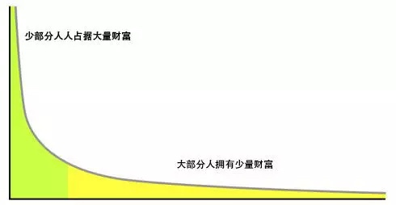
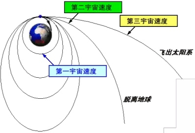

1%的富翁拥有全球一半财富
早在1895年，意大利经济学家维尔弗雷多·帕累托（Vilfredo Pareto）在研究国家的财富分布时，发现了一个很有趣的现象——每个国家的财富都呈现出一种分布方式，少部分人占据大部分财富，而大部分人拥有少量财富。

幂律分布（长尾分布
在一个稳定的社会中，会可预期的逐渐形成阶层。贫富差距越来越大，愈演愈烈。
华盛顿智库Institute for Policy Studies发表了《“生而有幸”为富人》（Billionaire Bonanza，此处为意译）的年度报告，发现美国最富有三个人：贝索斯、盖茨和巴菲特的财富，等于美国底层一半人口的财富总和，即超过了1.6亿人次或6300万个家庭。
美国最富有的三个人贝索斯、盖茨和巴菲特的财富，等于美国底层一半人口的财富总和。
著有《二十一世纪资本论》的法国经济学家Thomas Piketty定义的“世袭贵族社会”，亿万富翁精英阶层与普通人的生活会持续分离。中低收入家庭有一些财富，但是通常没有先进等随时可用的流动性资产。而贫困的家庭面临着巨大压力，一旦失业、生病、离婚或车祸等意外事故，就只能在生死线上挣扎。
富人的财富升值靠成立公司和投资增值，越来越多的海外避税天堂和合法信托，令隐藏资产比以往任何时候更为广泛，而普通人的工资停滞不前、储蓄不断减少。
惊人的财富不平等现象会加剧种族和阶层的分化。
马太效应，名字来自圣经《新约·马太福音》一则寓言： “凡有的，还要加倍给他叫他多余；没有的，连他所有的也要夺过来”。强者愈强，弱者愈弱。
稳定的社会，越是难以突破自己的阶级
稳定的社会就会形成一个稳定的制衡力。我们经常听到一个蝴蝶效应力然后造成巨大的影响。
一只南美洲亚马孙河边热带雨林中的蝴蝶，偶尔扇几下翅膀，就有可能在两周后引起美国得克萨斯的一场龙卷风。原因在于：蝴蝶翅膀的运动，导致其身边的空气系统发生变化，并引起微弱气流的产生，而微弱气流的产生又会引起它四周空气或其他系统产生相应变化，由此引起连锁反应，最终导致其他系统的极大变化。
但是在现实生活中，基本不会发生蝴蝶效应这样的事情。在稳定的制衡系统（比如环境、企业、社会、国家）里，一个轻微偶然的蝴蝶效应力起不到什么作用，改变不了处在其中的事物状态。
必须足够大的力，质范畴的变化；或持续不断的力，依靠量变达到一定的“度”，产生的合力大于制衡力，才能改变已经稳定了的状态。
个体要多努力，才能提升自己所处在的阶层
人想要改变自己的阶层，跨越到更高的阶级，产生的改变力必须要产生大于社会的制衡力。但是这个改变的力是多大的呢？绝对不是简简单单的一句话，就能成功的。

宇宙速度
举个不太恰当的例子：一直在地球上奔跑，永远飞不出地球，你停下来，就会落在地面上。你的速度必须大于第一宇宙速度，你才能不靠努力而一直飞；达到第二宇宙速度，你才能脱离地球；或者第三宇宙速度之后的飞离太阳系……
打破稳定系统状态的制衡，你不仅是用力，而是非常之用力，这是质的变化层次！
如果想要改变这个状态，必须自己的改变力大于制衡力，这个属于“质”的范畴。量的范畴不会改变这个稳定的系统的。或者着持续不断的量的积累，组成合力后大于制衡力，系统状态才会发生改变。
《真心英雄》里唱的：“没有人能随随便便成功。”
大佛普拉斯
最近在台湾上映的一部电影《大佛普拉斯》，社会固化，个人努力无望改变自己的阶层。人生没有什么反转的可能，能做的就只有去庙里拜拜，求助于神力。可是我们到底在拜什么？电影最后指出“其实我们都在拜尸体却不自知！”
人拜佛拜佛，其实拜的是自己！
不能求助于神明，也无法一直求助于他人。未来，我们靠的只能是自己。
如何改变自己，提升自己的阶层
中国社会阶层还没有像台湾、美国那么得难以提改变。我们还是有很多机会改变的。可能大家身边就有很多靠自己努力而改变自己的命运的很多的例子。我的表哥如何如何，然后通过成人高考考上了北京的研究生，后来定居在北京，迎娶了白富美。村里的某户人家，原来很贫穷，后来竟然逐渐创业有了自己的公司……
我们还是可以通过一些方法与努力来搏一搏命运的。
1.提升自己的认知
说到提升自己的阶级层次，普通人都是比较实在的说就是要提升自己食物链层次：掌握了核心资源或者权利，得到更多，赚得更多等等，作者你干嘛说提升自己认知这些虚头巴脑的东西。
食物链无论怎么追求，永远都有人比你更强，一味追求往上，你要非常辛苦，付出很多。有时候过度牺牲并不值得。食物链能够奴役别人。但达到一定程度就可以不被别人奴役了。
提升认知，不一定能提升层级，当能够让你更加自由。而且能够使你更好地做好人生的决策。
2.选择你的领域
人生做选择题的能力比做解答题的能力更加重要。处在风口浪尖就是一头猪都能够飞起来。有时候不见得别人比你出色，他甚至能力比你差一些，但是因为人家选择题做得好，处在了头部领域，就是收获的比你要多。
自己能接触的领域，选择适合自己的。领域中推荐选择那些能够不断提升能力的。而不是开始进步很快，而越到后面，反而有个瓶颈制约着自己。
比如炸油条学不到几周就能自己上手做了。但是这个能力有瓶颈，你一早上能炸100根，努力后能力提高了可能一早上也就增加到了200根、300根，然后再也很难提升了。
选择并专注于不断提升能力的领域，做好人生的选择题。
3.专注领域内的能力，并各方面能力提升
选择好自己的领域后，就要不断提升能力了。能力才是自己安身立命的保障。无论选择打工或者创业，能力是最基本的。
学习能力、知识内化的能力、沟通的能力、分享的能力，思维能力、根据反馈而作出调整改变的能力，都深刻得影响着我们的未来。
能力的拓展不是爬山，更像是构建一个又一个的地图，你拥有了某方面的能力后，就建立了某一方面的地图，它打开了你的新世界。而且很多能力是能够叠加在一起的。能力所带来的改变与提升是真真正正、真真实实的改变。
未来充满了不确定性，只具有单方面的能力是不够的。如果某个领域突然没有了。那辛苦积累的能力就没用了。所以多积累各方面的能力，
未来通才比专才更加值钱。
4.持续地寻找找关键点/杠杆点
一个稳定状态的系统，任何的改变都很难。但是系统都有一些关键的节点，能起到四两拨千金的效果。比如2/8法则，最重要的只有20%，80%的大多数都是不重要的。
而且不断寻找那持续的关键点。比如2/8法则里面，20%重要的里面依然遵循着2/8法则。这需要大量的观察和思考。每个系统都有那杠杆点，找到这个杠杆点，能迅速放大一个人的努力，达到事倍功半的效果。
写在最后面的话
阶层分化的趋势稳定且可预期。有人一出生就继有了万贯家产，而大部分人拼尽一生都可能在吃土。命运就是这么不公平。
社会会阶级固化，但个体的命运却不会，而且是能够改写的。
面对命运的不公平，我们能够靠自己做出一些努力，用更好的方法，持续放大自我效能，努力的改变由量变而达到质变。
不久的将来，我们也能成就一番事业，改写命运。